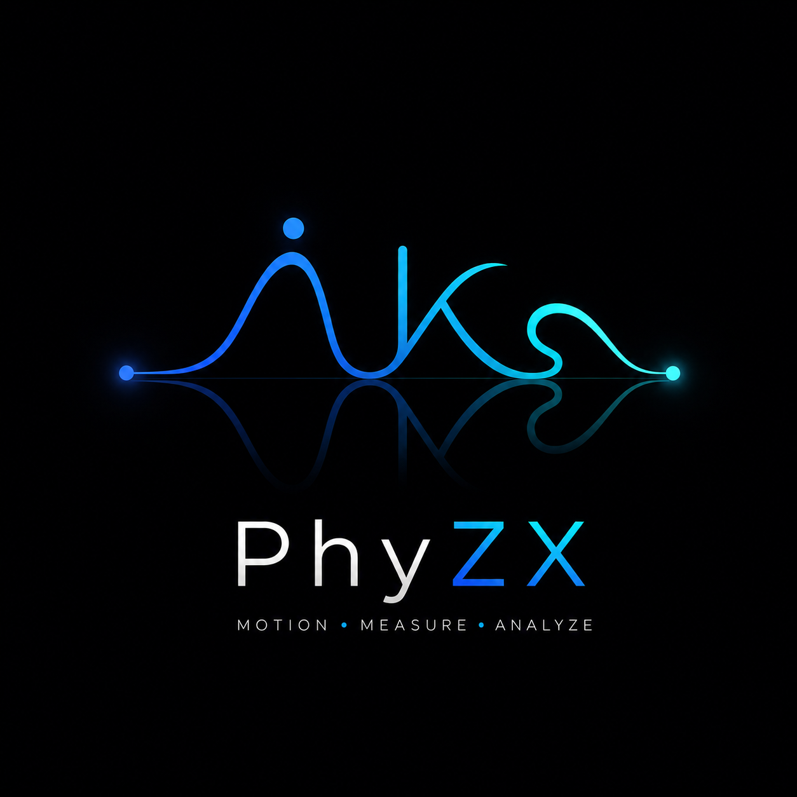
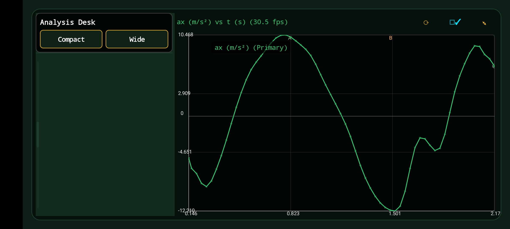

01 — IMPORT
Open a video
Choose a locally stored video. The app asks only for access needed to open the media you choose.
Video measurement, made practical
PhyZX lets you calibrate a recording, plot object motion, analyse light intensity from a video frame or your own image, and export labelled scientific results.
Read the guidePrivacy policy
Quick start
01 — IMPORT
Choose a locally stored video. The app asks only for access needed to open the media you choose.
02 — CALIBRATE
In CAL, place the two endpoints of a known distance, enter its value and unit, and set the origin/rotation when required.
03 — TRACK
Use manual tracking for precise frame-by-frame placement or Auto Track after choosing a seed and ROI.
The analysis workspace

Analysis Desk example. Every exported PDF chart now includes a descriptive title, named X/Y axes, units, and endpoint values.
Motion tracking
If you edit a placed point, it is converted back to video coordinates so it stays at the correct physical location on redraw.
Use the shortest sensible stride and inspect fast motion, occlusions, and blur.
Light intensity
A selected photo uses pixels on its position axis. The video's real-world calibration cannot be transferred to a different image.
Graphs and data
| Graph | Meaning | Typical use |
|---|---|---|
| Position vs time | Horizontal or vertical displacement over time | Velocity from gradient |
| Velocity vs time | Horizontal, vertical, or speed | Acceleration from gradient |
| Acceleration vs time | Rate of velocity change | Forces and periodic motion |
| Track comparison | Track A, Track B, or their difference | Collisions and relative motion |
| Light profile / time series | Intensity over position or time | Optics, diffraction, brightness change |
Export
Best for raw observations and use in analysis software. Includes timestamps, coordinates, derived quantities, units, and quality metadata.
Best for spreadsheet work. Separate sheets keep raw data, the selected representation, statistics, and quality information understandable.
Best for sharing. Graphs include a title, X/Y axis names, units, legend, and visible numeric range so they remain meaningful when printed.
Before exporting: verify calibration, review uncertain auto-track points, choose the intended series and visible tracks, and check that units match your experiment.
Good measurement practice